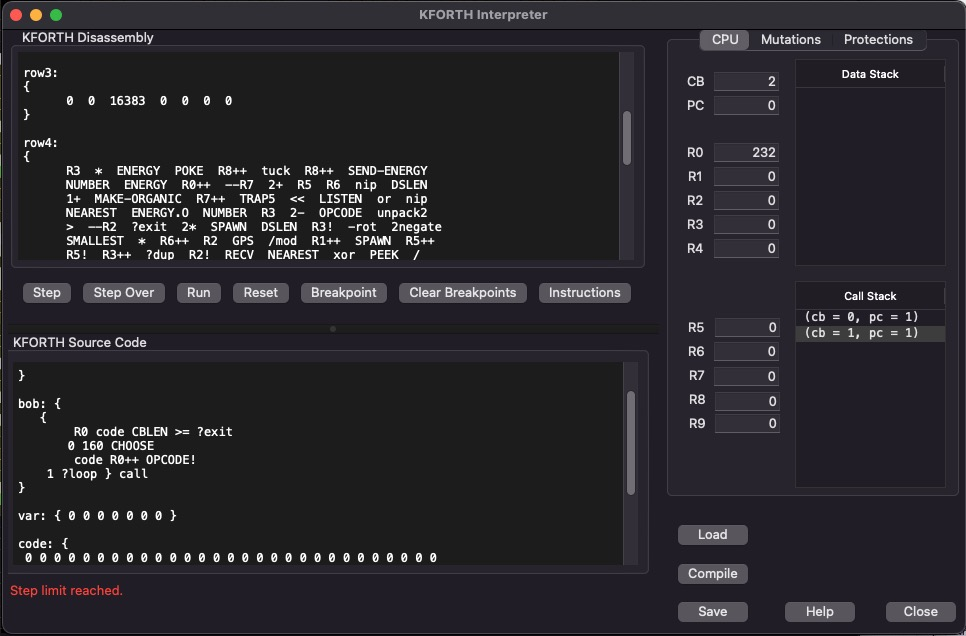
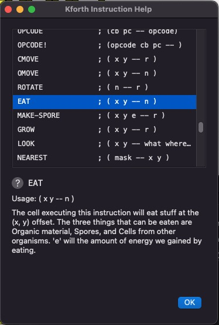
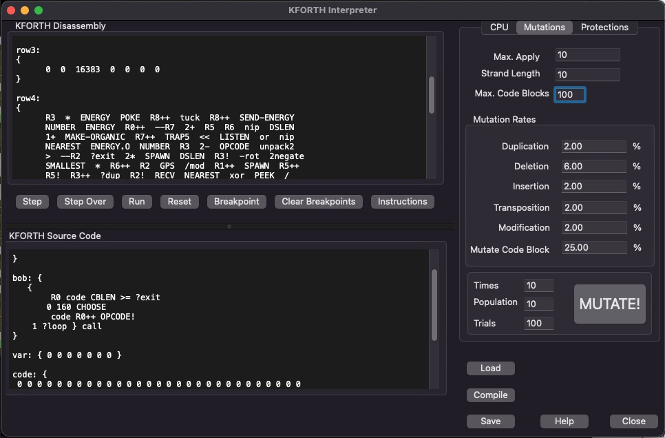
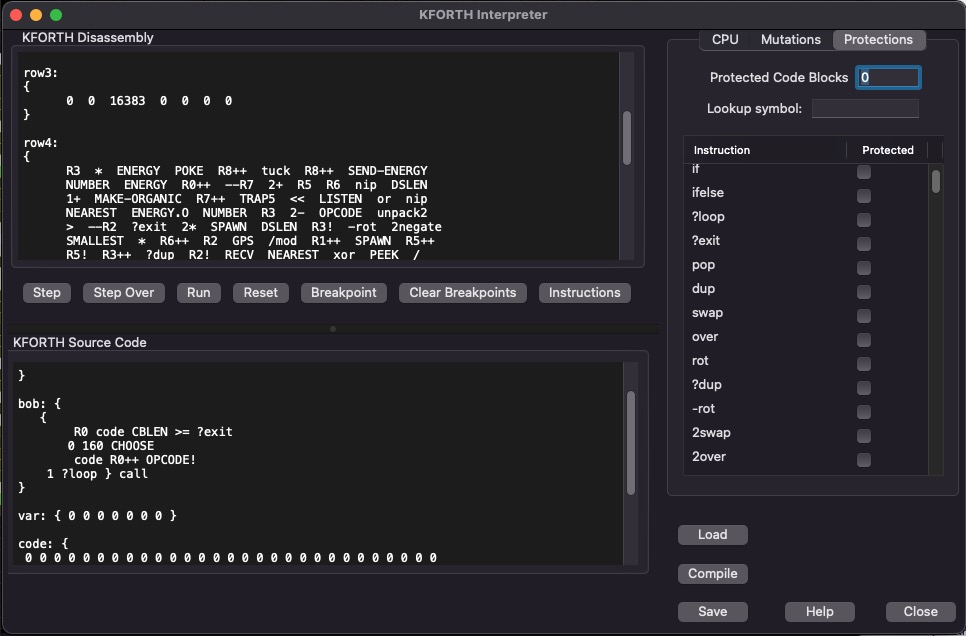

VOLVE 5.0
VOLVE 5.0
KFORTH Interpreter Dialog
This dialog allows you to experiment with KFORTH programs. You can also develop new genetic programs, and verify that they compile.

File Buttons
- Load: First load a KFORTH program (*.kf).
- Compile: Compiles the current program.
- Save: Save's the current program.
NOTE: If you modify something in the Kforth Source pane you will be prompted to save if you try to exit.
Debugger Buttons
- Step: Executes the next KFORTH instruction. Will "step into" any subroutine call. (Function key: F7)
- Step Over: Executes the next instruction, but if the instruction is one of call, if, or ifelse then this button will continue execution until this instruction returns. (Function key: F6)
- Run: Runs the program until it terminates (or a breakpoint reached). The interpreter has special protections against stack overflows and infinite loops. The error, "Step Limit Exceeded", means your program exceeded about 10 million steps. The error, "Stack Size Limit Exceeded", means you have exceeded a stack size of about 10,000 elements. (Function key: F5)
- Reset: Resets the interpeter to the start of the program.
- Breakpoint: Add or remove a breakpiont. You can click on an instruction in the Kforth Instruction pane, and add or remove a breakpoint BEFORE this instruction. A little veritical bar will appear before the instruction, which is how we indicate a breakpoint. (Function key: F9)
- Clear Breakpoints: Clear all breakpoints. (Function key: F8).
- Instructions: Displays a list of KFORTH instructions. The current instruction will be shown in the KFORTH Instruction help dialog. You can also click on an instruction and press this button.
The KFORTH Interpreter allows the special organism instructions like OMOVE, LOOK, EAT, etc... Inside of the interpreter these instructions are just no-op's. But at least you can examine real genetic programs and single step through them (even though they won't actually do anything).
KFORTH MACHINE
This section of the dialog shows the current state of the kforth machine. All 10 registers R0 ... R9 are shown. CB is the current code block being executed. PC is the current program counter. Both CB and PC are 0 based numbers. Code block 0, refers to the code block with the label "main:". PC is relative to the current code block being executed.
The data stack shows the elements currently on the data stack. The top most item represents the "top" of the stack.
The call stack shows the saved locations for cb and pc. This stack allows KFORTH to return from a subroutine call.
KFORTH INTERPRETER
This dialog allows you to execute generic KFORTH program (that is, KFORTH programs that do not use CELL instructions). However "dummy" versions of the CELL instructions are provided, so that genetic programs may be explored using this dialog without getting compiler errors. You can even step thru the code, but since all the CELL instructions "fail" you won't learn much.
KFORTH Instruction Dialog
If you click on [Instructions] this pop-up dialog will appear:
This dialog lets you browse the list of available instructions.
Function Key Summary
- F5 - Run
- F6 - Step over
- F7 - Step
- F8 - Clear all breakpoints
- F9 - Add/remove breakpoint
The mutations tab.
The protections tab.
